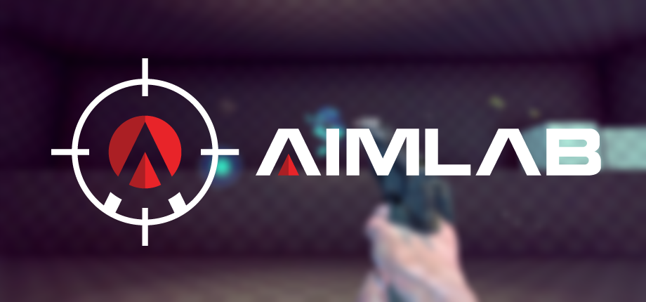

How to aim
Arguably THE most important skill in any competitive shooter. But how do you git gud?

Let me introduce you to Aim Lab. It's an amazing aim trainer and has helped me a ton personally.
For MWO specifically, focus mainly on "Microshot (Ultimate)" and lots of tracking exercises.
To figure out your sensitivity, just set your Aim Lab game to be Valorant and multiply your sensitivity by e.
Yes, Euler's number. No, I'm not joking, the actual value is so close to it that it's completely valid to just take e.
For example my 0.14 MWO sensitivity converts to 0.14 * e = 0.38 Valorant sensitivity in Aim Lab.
For all non math nerds: e = 2.71828.